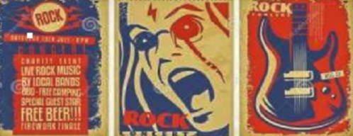

|
Rock es un termino amplio que agrupa una variedad de estilos de musica popular originados como rock and roll a principios de la decada de 1950 en Estados Unidos y que evoluciono en un gran rango de diferentes estilos en los anos 1960, particularmente en ese pais y Reino Unido. Tiene sus raices en el rock and roll de los anos 50s, proveniente de la combinacion de generos anteriores como el blues, rhythm and blues y el country. La musica rock tambien se nutrio fuertemente del blues electrico y el folk, e incorporo influencias del jazz, la musica clasica y otras fuentes. El rock se ha centrado en la guitarra electrica, normalmente como parte de un grupo integrado por cantante, bateria, bajo y algunas veces, instrumentos de teclado como el organo y el piano. Usualmente, el rock se centra en las canciones, habitualmente con compas de 4/4 y una estructura verso-estribillo; sin embargo, el genero se ha vuelto extremadamente diverso y las caracteristicas musicales comunes son dificiles de definir. Como la musica pop, las letras se centran a menudo en el amor romantico, pero tambien tratan un rango amplio de otros temas con un enfoque frecuente en lo social, lo personal y lo politico. | |||
|  |